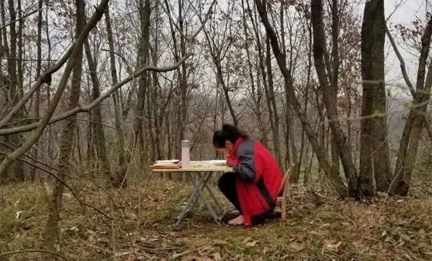

全民在线上课，一块屏幕改变了什么？
原文链接 备份链接 为什么这次在线教育又火了？ “到了2020年，老师和学生都不用去学校了，在家里就能上课”。这是2000年梦想杯作文大赛特等奖节选中的一句话，没想到在二十年后的今天却由于新冠肺炎疫情影响而变成了现实。 近年来在线教育被社 …

在线教育新供给，将引发中国未来四大趋势

西藏昌都，雪山顶上，斯朗巴珍每天步行30分钟找网上课
「 学习的革命，是技术普惠带来的社会变革，更是教研教学辅导变革带来的优质教育新供给 」
移动电信铁塔随后为斯朗巴珍提供了更佳网络服务，网络基础设施深入最偏远乡村，加速了学习的革命的到来。
2003年的非典加速了中国电商时代和数字化浪潮的到来，2020年春天的新冠肺炎疫情，1.8亿中小学生完成了一次学习大迁徙。
作为一名有多年教学经验的高中数学老师，2020春节，张华刻骨铭心。
1月24日，大年三十，武汉封城，身在湖北荆州老家的张华，接到了作业帮总部的指令——开免费直播课。全公司数百名老师和技术同事都被动员起来了。
身为拥有数万忠实粉丝的明星老师，又是作业帮直播课高中数学教研教学负责人，张华的任务是为疫情期间窝在家里无法出门的高中学生，提供高质量的免费直播课。
短短一个月时间，有3100万学子登陆了作业帮直播课平台，张华和几百位同事精心准备的直播课受到了学子们像追电视连续剧一样每天按时点击收看的欢迎。仅仅在半年前，他们还在为暑期大战中赢得200万学子的认可而收获了满满的成就感。
与此同时，在教育部要求“停课不停学”的号召下，全国1.8亿中小学生参加了学校组织的各类型网课。一直深受疑虑、被观望、渗透率较低的在线教育行业，获得了史无前例爆发式增长。

南通初中女孩滞留湖北，在荆门老家坚持每天到山顶上网课
这是一场关于优质教育的新供给革新——围绕新课纲、新高考教研教学辅导的现代化课程体系和新课程供给能力，并通过技术手段普惠到全国每一个学习角落；
现代化课程体系、新课程供给能力和普惠全国，是优质教育新供给三个核心关键词，是技术与教育相结合产生的一次生产力飞跃。
可以大胆预见的是，优质教育新供给将引发一场学习的革命，而且已经不期然而至，以下趋势将不可逆转：
中国将从学习大国向在线学习强国升级；
技术驱动将扭转优质教育资源不均等分布现状；
五六线县城乡村孩子们对优质教育的渴望将触手可及梦想成真；
在线学习或将是未来工作生活方式的预演，并推动中国成为数字化强国。
优质在线教育的新供给课程体系、供给能力和普惠程度，直接关乎这场影响深远的学习的革命的深度和广度。
仅仅三个月前，许多人可能还停留在这样的印象中：
“几年前我做线下教育出身，我原本对在线教育的效果是不认可的，在线课程有天然劣势，比如不能直面学生，信息传达途径受限，学生量大且水平参差不齐，课堂对学生的约束力不够等等，都会让我没有信心。”张华老师说。
但是现在，时代的巨轮已经驶向历史的深处。我们来回眸一下，悄然发生的这场学习的革命的推动力来自哪里。
直播课、手写板和视听体验
为了能顺利开免费直播课，张华向村委会借了电脑备课，作为2005年荆州下辖的界首市高考状元，这个光环让村里自豪，当然也享有便利，知识在农村总是备受尊敬，何况他还是北京的名师。
电脑内存只有8G，做直播是不够的，只能把其他电脑内存条拔过来。仍有一些偏远山区、海岛、边疆村落网络信号欠佳，但网络已经抵达大部分中国最基层乡村，上网速度没有问题，公共基础设施这么多年来衔枚急进，在关键时刻，发挥了重要作用。
在教育部的统一部署下，全国各省市县教育部门都紧急部署在线学习，各种直播工具结合社交软件瞬间激活，学校和老师们也都行动起来。公立学校的老师们习惯了线下教学，这一次集体过一回“网红老师”的瘾。
由于封锁，张华无法找来手写板，只能临时用A4纸张替代，让摄像头对着A4纸演算和分析，效果难免有些影响。几经辗转，从北京紧急快递过来的手写板到了，张华老师的直播课恢复流畅。

作业帮直播课主讲老师张华正在备课
在线教育与线下教育，非常大的不同就是，手机端的学生，非常挑剔，如果视听体验不佳，随时一个home键干脆玩游戏去了。
线下线上是泾渭分明的两种教学环境：
学校教育环境是：一间教室、一块黑板、一根粉笔、一个老师、40多位学生；
在线教育场景是：一台电脑、一个PPT课件、一块手写板、一个摄像头、一个麦、一盏补光灯，一个主讲老师，几个几十个辅导老师，几千几万甚至几十万学生。
相比线下教学，线上教学难度是几何式增长。
全国上千万刚刚体验了“网红”瘾的中小学学校老师们，可能要花一些时间逐渐明白，在线教育场景下，视听体验至关重要，视听体验不仅仅是一个写手板，需要逻辑清晰版式美观的可视化PPT课件，需要流畅的观看体验甚至实时互动，还有许多无处不在的细节。而视听体验还只是在线教育课程要达到优质的最基础要求。
一项调查表明，如果可以自由选择，至少有90%的学生，在自律和放纵之间选择了后者。尤其是当下各大娱乐直播短视频大行其道，不仅争夺成年人的时间，也吸引中小学生的注意力。
老师要跟网红争夺注意力，除非不让学生碰触手机。线上的环境，不仅要跟线下学校课程同步时有独特性，也要跟线上诸如游戏和短视频抢时间。
一句话，在线教育，凭什么优质？
只有TOP 1%的老师才能做好在线直播课
优质并非自封自诩，标准但凭一条：在线直播课可以做到三优，老师优、课程优、服务优。
老师优，就是主讲老师讲得好；课程优，就是课程教研做得好；服务优，就是辅导老师辅导得好。
衡量三优谁说了算？有两个结果导向硬指标：学生能否学好这门学科；学生能否在最短时间实现最大的进步。
提出这两大标准的老师叫文煦刚，是作业帮直播课高中教研教学负责人，负责高中各课程教研教学的组织管理，两大优质标准贯穿所有老师日常所有工作。
“许多课程只会站在老师的角度，讲解如何学好这门学科，只回答第一个问题，这是远远不够的。高中学生时间少，负担重，高考作为选拔优秀人才的考试，对大部分学生来说，难度是非常大的。我们的课程产品不仅需要让学习最终学好，还要让这个过程尽可能短，尽可能高效。更重要的是，学生需要真切地感知到，从而才能树立信心。”文老师说。
在学校教学里，比较侧重问题的前半部分，教学大纲已经规定好了难度和进度，老师必须照着大纲教走，照着进度走。学生能否跟得上，不是课堂上完全能解决的。学校教学就是这样，无法为落后的学生把课程的进度停下来，就如飞机火车不会等待迟到的旅客，不按教学大纲规定的任务和进度走，学校教学就会大乱。
作业帮直播课的教研和主讲老师们深深知晓，能让学生学好只是课程产品的一个方面，如果不能让学生实现短期最大进步，课程产品即便不说失败，也不能说优质，就要从教研、教学和辅导多个方面去检讨和改进。这种改进不是按学期进行，是以周为单位进行迭代的。
从这个角度说，作业帮既是一家教育机构，也是一家互联网科技企业，相比学校老师们是按学期考察评定教学成果，作业帮以周为时间单位，内部竞争和考核的激烈可以用残酷来形容。
但老师们一旦习惯了这种挑战，就甘之如饴。多个维度数据几乎在直播结束那一刻就可以掌握。让数据说话，结果直观，问题和效果一目了然，这让来自全国各地身经百战的名校老师们倍感压力也倍感兴奋——老师们接受的挑战越多，手机端的学生的进步就会越快。教学相长在数字化时代被赋予了新的意义。

在直播课上学生们积极参与答题互动
教研做好了，还得会讲。会讲是多个方面的，镜头感强是形式上的训练和要求。文煦刚老师介绍说，作业帮直播课老师之所以受全国学生欢迎，仰赖于以下硬核特点：
过硬背景：也即高学历。最好是清华、北大毕业，至少是双一流大学或知名师范大学。
强解释力：有“学生视角”，能把复杂问题简单化、枯燥问题趣味化、平淡内容丰富化、节奏设计包袱化，善于调动学生的参与感，感染力要很强；有“上帝视角”，能看到现象背后不为一般老师所知的本质。
高影响力：镜头感强、极具激情或亲和力；表达能力强，能掌控数千人大场；极度自信、有榜样风范，或非常有爱心、亲和范儿；能够向学生传递正向的文化价值观。
鲜明的个人特色：要让学生在互联网的海量信息中能记住老师、喜欢老师。
文煦刚老师总结说，能够符合以上标准的主讲老师，就很少了。只有TOP 1%的老师才能有机会成为在线直播课主讲老师。而且在上直播主讲之前，需要进行一段时间的严格培训过程。
直播大班课，教育领域一次生产力大解放
2015年，在线直播课诞生了。
没有人预见到，直播课大大解放了教育领域的生产力，改变了生产关系。
张华是直播课早期吃螃蟹者，他敏锐发现了直播课改变了传统教育过程：
学校教育或者课外1对1培训，更多的是对师资管理提出了更高的要求，老师要求是全能型的，课程教学内容的产出标准把控极难，很难集中精力在教育本质上。
直播大班课则不同，不需要耗费那么多精力在师资管理和品质把控。负责直播教学的老师有更多时间研究讲课，教研成为独立的部门和工种，教学和教研都获得了足够充裕时间和空间。

湖北黄冈女孩李心怡在家上直播课
时间，无论对于老师，对于学生，都太重要了。老师、学生、家长的焦虑，总是担忧时间不够用。时间不够用，对于老师来说，无法专心进行教研和教学的研究；对于学生来说，不能在短时间内理解和掌握学习的奥秘。尤其对于升学阶段的学子来说，时间是朋友更是敌人。
分析了1对1教学的局限和直播大班课对教研教学过程和管理的深刻变革，张华说，“我坚定走向了直播大班课的战场，辗转之间，也让我意识到技术的力量对教研教学，学生的体验，教学效果的帮助有多大。“
过去五年来，直播大班课进行了多次迭代和进化。
早期的直播课，更多的还是单纯的将线下课程直接搬到了线上，只是授课的媒介发生了变化。这样的课程在今天看来，对比线下培训课程没有太多优势，除了价格，除了主讲老师本身的魅力。
那个不清晰的时段，直觉告诉张华，必须坚持一点，打差异化——跟学校老师不一样，跟机构老师不一样，甚至跟同平台的其他老师都不一样。具体可以是个人的授课风格，可以是知识点的讲解形式，也可以是方法的创新，可以是全面的总结梳理等等，不管形式是什么，总要有一点跟别人不一样。
“但是不一样的背后是什么，其实当时并不是很清楚。能走到今天，可以说都是逼出来的。“张华说。
但是，就是这种对差异化的追求，逐渐释放了强大的能量。原来课程里隐藏了如此丰富的内容和维度。学校老师被大纲束缚住了，他们没有精力也没有空间来发挥。但对于学生来说，学习知识的欲望是强烈的，从不同侧面去理解知识，根据自己喜欢的方式去掌握知识，简直太美妙了。那些线下优秀的名师们的秘诀也在于此，他们依赖课纲，又超越课纲，独创教学秘籍。不过，相比线上直播课，线下名师们所能影响的学生人数太有限了，能否进入名校就成为许多家长焦虑的源头。
短短几年，作业帮的直播课程形式越来越丰富，既有同步课，也有名家素养课，还有专题课等。
课程的进化，是对在线教育过程认知的进化，相比传统教育，人们第一次，将教育产品的生产过程，像互联网和信息技术公司那样，迅速迭代，精彩纷呈，又不脱离线下教学课纲。
一个形象的比喻是，与学校课纲同步的直播大班课，是在学校、家长和学生之间，架起了一座知识融会贯通的桥梁，通过一门好课、一位好主讲老师和一位好辅导老师的课程服务体系，结合最新技术的应用使得这座桥梁四通八达。
经过2020年疫情期间在线教育的洗礼，基层偏远地区的孩子也发现，只需要打开手机就可以触达名师精彩课程。优质在线教育，将是他们缩小与一二线城市教育资源差距的重要途径，这将扭转全国1.8亿中小学生优质教育资源不均等的现状。
技术硬核——科技在学习的革命中的力量
好的视听体验，遴选TOP 1%的老师进行课程教研和教学直播，是优质在线教育可以看得见的部分，也容易学习和模仿。还有一些看不见的部分，也体现了优质在线教育新供给的内涵和本质。
全国各地的学校教育如果说存在较大差距，无非两个方面：大楼和名师。大楼就是教学环境和教学基础设施；名师就是老师们之间的差异。一个学生，一辈子最幸运的莫过于遇到一位好老师，而且越早越好，事关励志、梦想和学习基础。
而在线教育下，课程是否优质，差距至少在四个方面：技术、好课程、好老师、好辅导员。这其中技术有独特的重要性，它可以衡量一家在线教育平台能够辐射多广，能够改变教育过程多深，能够给学习带来多少惊艳。
技术是一个复杂的体系和累积，需要正确的技术方向，需要将当下流行的有助于提升教学效果的技术开发应用到课程演示中，作业帮在新技术的应用方面已经远远走在了行业前面。
教育行业的技术探索已持续多年。张华是较早尝试用技术驱动教学的老师，从事过政府工程类的智慧教育集成工作探究，接触了很多从事这个行业的国内国际领先的软件和公司，结果发现它们依然停留在硬件+软件方向，纯内容产出有限，进度及质量都不及预期。他相信线上教育是未来，但并没有找到方向，直到遇见了作业帮，一家做拍照搜题起家的公司。
这时候，张华真正认识到了技术对教育内容和形式的改变。从早期的拍照搜题，到目前的在线直播，作业帮的技术不断升级迭代。
经受千万级高并发直播零宕机、无事故的实战检验。6人小组直播教室、数学画板、iLab教学系统……黑科技陆续在直播教学中派上用场。
iLab物理虚拟实验
比如实验室是全国高中教育资源不均衡比较突出的领域，各校条件差异非常大。作业帮直播课推出“iLab虚拟实验室”，将现实中复杂、难以观察、易错危险的实验，搬到了可以自行操作的课堂上，400+的精品物理虚拟实验，全真动态展示，实验效果明显，直观性强，学生可以通过“iLab虚拟实验室”和老师一起动手操作。
利用这些教育黑科技产品，学习方式和效果大大超越了线下教学所能理解的范畴。
……
在线教育的兴起，将引发学习的革命，最大程度促进优质教育资源均等化，从这个意义上说，不啻是一场影响深远的社会变革。
本文仅代表作者观点，不代表本刊立场
值班编辑：石若萧
推荐阅读
▼


国际公共卫生专家：美国疫情防控迎来转折点，未来几周病例会迅速上升


原文链接 备份链接 为什么这次在线教育又火了？ “到了2020年，老师和学生都不用去学校了，在家里就能上课”。这是2000年梦想杯作文大赛特等奖节选中的一句话，没想到在二十年后的今天却由于新冠肺炎疫情影响而变成了现实。 近年来在线教育被社 …
原文链接 备份链接 疫情虽险，学习不止。希望当下“直播上课”的情景，只是未来成功学子们回忆中一个有趣的插曲。 “刚才那题答对的刷个666”，女老师在直播间里喊着，屏幕上也随之刷满了来自学生们的“666”。这是今天的直播平台里，一场普通 …
原文链接 备份链接 经济观察网 记者 李静 “眼睛真的受不了”、“有娃的真累啊”，2月11日，一位学生家长提供给经济观察网的截图中显示，班级微信群里多位家长对于近期学校采用“线上授课”响应教育部疫情期间中小学生“停课不停学”的方式叫苦不 …
原文链接 备份链接 2020年春天，一场突如其来蔓延全国的新冠肺炎疫情，让这个时期变得特殊，在家学习成为主流的方式。老师纷纷变成主播，家长不得不成为督学。 然而，在线直播课究竟该如何上？很多人还是懵的。老师花式「翻车」、学生强撑精神的背 …
原文链接 备份链接 澎湃新闻记者 张轶君 蔡琳 从年前到年后，阿里旗下办公软件“钉钉”的下载量经历了过山车一般起伏。 作为一款企业移动办公应用，钉钉年前平日下载量滑动在苹果App Store总榜五十名到二十名之间。然而让人意想不到的是，节 …